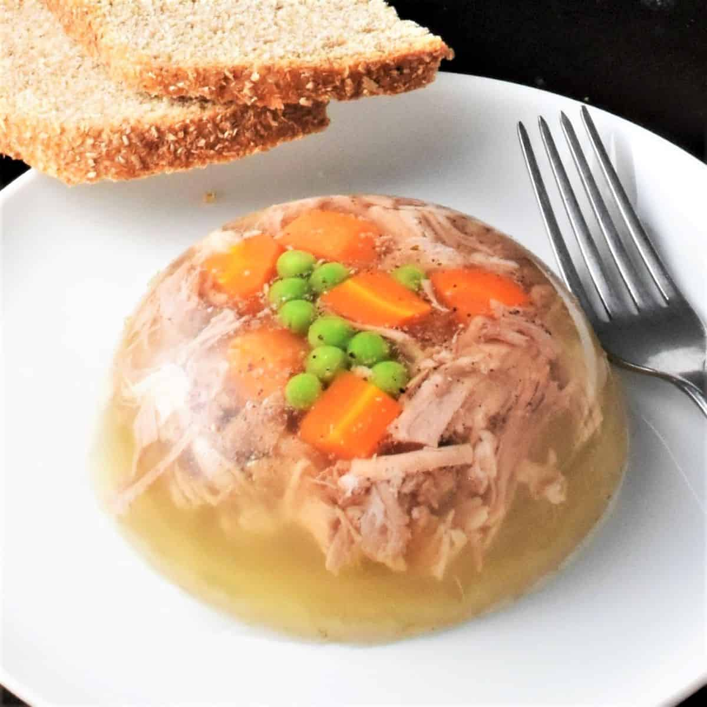

Authentic Polish Meat Jelly!

Polish meat jelly, known as galareta or zimne nóżki, is a traditional dish made from slow-cooked pork trotters, knuckles, or other gelatin-rich meats, which solidify into a flavorful, savory jelly when chilled. Often served cold with vinegar, lemon juice, or a bit of mustard, this dish is a beloved appetizer in Poland, especially around holidays and family gatherings. Its rich texture and deep umami taste make it a unique and satisfying dish for those who appreciate old-world culinary traditions.
Ingredients
For the broth:
- 2 pork trotters (or substitute with pork knuckles or beef shank)
- 500g pork shoulder (or chicken for a lighter version)
- 1 carrot, peeled
- 1 parsnip, peeled
- 1 onion, halved
- 3 garlic cloves, smashed
- 3 bay leaves
- 1 teaspoon black peppercorns
- 1 teaspoon salt (adjust to taste)
- 1 teaspoon marjoram (optional)
- 2 litres water
For serving:
- 2 hard-boiled eggs, sliced (optional)
- Fresh parsley, chopped
- White vinegar, lemon juice, or mustard
Steps
Prepare the meat:
- Clean the pork trotters thoroughly and place them in large pot.
- Add the pork shoulder, coarrot, parsnip, onion, garlic, bay leaves, and peppercorns.
Simmer the broth:
- Pour in enough water to fully cover the ingredients (about 2 litres)
- Bring to a gentle boil, then reduce the heat to low. Skim off any foam that rises to the top.
- Simmer uncovered for about 3-4 hours, until the meat is falling off the bones and the broth is rich.
Strain and season:
- Remove the meat and vegetables from the pot. Discard the bay leaves and peppercorns.
- Strain the broth through a fine sieve or cheesecloth to remove impurities.
- Taste and adjust seasoning with salt and marjoram, if using.
Shred the meat:
- Separate the meat from the bones and cartilage, then shred it into small pieces.
- Optionally, dice the carrot and add it back for color.
Assemble and chill:
- Arrange slices of hard-boiled egg in serving bowls or molds.
- Distribute the shredded meat evenly, then pour the strained broth over it.
- Let the mixture cool slightly before placing it in the refrigerator. Chill for 6–8 hours or overnight until fully set.
Serve and enjoy:
- Remove from the fridge and garnish with fresh parsley.
- Serve with a side of vinegar, lemon juice, or mustard for extra flavor.